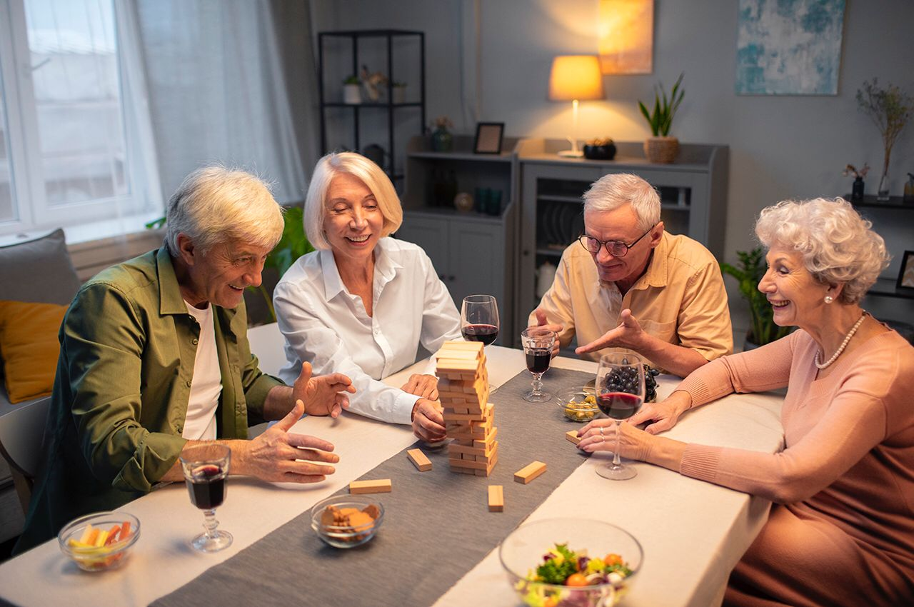

Actividades recomendadas
Las actividades para adultos mayores deben ser suaves, divertidas y seguras.
Algunas de las mejores opciones son:
- 🌱 Caminatas cortas al aire libre
- 🎨 Manualidades, pintura y tejido
- 🎵 Música relajante y bailes suaves
- 🧠 Juegos de memoria y rompecabezas
- 📚 Lectura individual o grupal
- 🤝 Socializar con familia y amigos

Video sobre el cuidado del adulto mayor
⬅ Regresar a la página principal